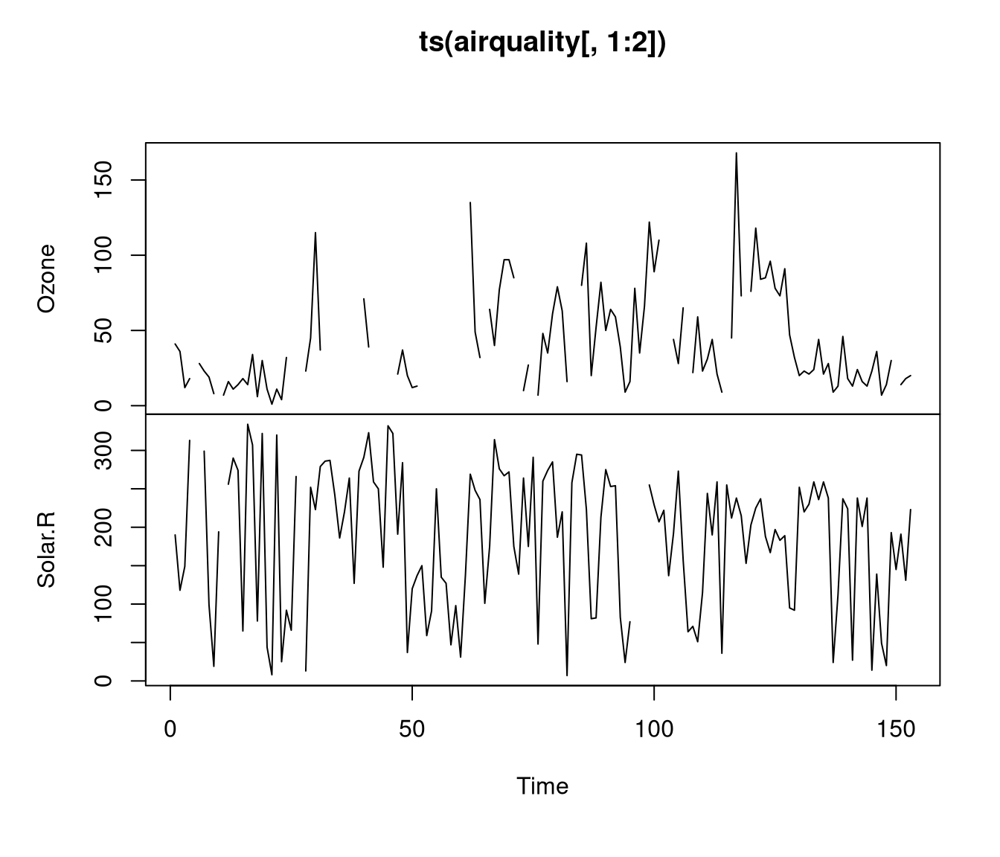

2.3 Datos faltantes
La problemática originada por los datos faltantes (missing data) en cualquier conjunto de datos subyace cuando se desea realizar un análisis estadístico, para más información en R, se puede consultar CRAN Task View: Missing Data
Vamos a ver un ejemplo, empleando el conjunto de datos airquality que contiene datos falntantes en sus dos primeras variables:
## Ozone Solar.R Wind
## Min. : 1.00 Min. : 7.0 Min. : 1.700
## 1st Qu.: 18.00 1st Qu.:115.8 1st Qu.: 7.400
## Median : 31.50 Median :205.0 Median : 9.700
## Mean : 42.13 Mean :185.9 Mean : 9.958
## 3rd Qu.: 63.25 3rd Qu.:258.8 3rd Qu.:11.500
## Max. :168.00 Max. :334.0 Max. :20.700
## NA's :37 NA's :7## [1] 153## Ozone Solar.R Wind
## 37 7 0A continuación se muestra la distribución de los datos perdidos en el data.frame (a lo largo del tiempo, por mes):

¿Existe un patrón no aleatorio en los datos faltantes del ozono? Esta pregunta puede ser abordada parcialmente utilizando el test de Little (Little 1988), disponible en la función mcar_test() del paquete naniar. Este test permite evaluar si los datos faltantes son generados por un mecanismo completamente aleatorio (MCAR). Si la hipótesis de MCAR es rechazada, esto sugiere que los datos faltantes podrían estar siguiendo un mecanismo MAR (missing at random) o MNAR (non missing at random).
Sin embargo, en muchos estudios, se omite el paso anterior y se procede directamente con alguno de los siguientes métodos:
- Análisis de casos completos (complete cases)
- Análisis de casos disponibles (borrado por parejas pairwise cases)
- Imputación de datos faltantes (por la media, mediana, último valor observado, vecino más cercano, valores predichos usando los datos observados….)
Siguiendo con el ejemplo, ante la presencia de datos faltantes, en R inicialmente no podemos conocer cómo se relacionan las tres primeras variables:”
## Ozone Solar.R Wind
## Ozone 1 NA NA
## Solar.R NA 1 NA
## Wind NA NA 1y requiere indicar cómo tratar los datos perdidos. Por ejemplo, una opción sería realizar un análisis sólo de los casos completos, eliminando todas las observaciones (filas) con algún dato faltante de nuestro conjunto de datos:
## [1] 111## Ozone Solar.R Wind
## Ozone 1.0000000 0.3483417 -0.6124966
## Solar.R 0.3483417 1.0000000 -0.1271835
## Wind -0.6124966 -0.1271835 1.0000000# otra forma de hacerlo sería:
# nrow(datos[complete.cases(datos),])
# cor(datos[,1:3], use ="complete.obs") También, se podría usar toda la información disponible. El tamaño muestral \(n\) sería variable en función de los NA’s de cada par de variables:
## Ozone Solar.R Wind
## Ozone 1.0000000 0.34834169 -0.60154653
## Solar.R 0.3483417 1.00000000 -0.05679167
## Wind -0.6015465 -0.05679167 1.00000000Por ejmmplo, ahora la correlación usa los \(146\) pares de observaciones disponibles para (Solar.R,Wind), en lugar de \(111\) del primer caso.
Por último, también se podría realizar una imputación (Van Buuren 2018). A modo de ejemplo, en el siguiente código, se utiliza la media:
datosI <- datos
datosI$Ozone[is.na(datos$Ozone)] <- mean(datos$Ozone, na.rm = T)
datosI$Solar.R[is.na(datos$Solar.R)] <- mean(datosI$Solar.R, na.rm = T)
cor(datosI[,1:3])## Ozone Solar.R Wind
## Ozone 1.0000000 0.30296951 -0.53093584
## Solar.R 0.3029695 1.00000000 -0.05524488
## Wind -0.5309358 -0.05524488 1.00000000Notar que para el caso del ozono, se han sustituido los 37 NA’s (24% de las observaciones) por un único valor (de ahí que ahora la varianza sea menor a la observada inicialmente, algo que en principio, no sería deseable).
## [1] 1088.201## [1] 823.3096Los datos faltantes son una realidad común en muchos estudios, aunque nadie los desea. Para tratarlos correctamente, es esencial comprender cómo se obtuvieron los datos observados y por qué algunos datos no fueron registrados antes de iniciar cualquier otro análisis. No abordar adecuadamente los datos faltantes puede tener un efecto perjudicial en nuestro estudio, ya que las conclusiones obtenidas podrían ser no representativas o contener sesgos.
2.3.1 Funciones apply
2.3.1.1 La función apply
Una forma de evitar la utilización de bucles es utilizando la sentencia apply que permite evaluar una misma función en todas las filas, columnas, etc. de un array de forma simultánea.
La sintaxis de esta función es:
X: matriz (o array).MARGIN: un vector indicando las dimensiones donde se aplicará la función. 1 indica filas, 2 indica columnas, yc(1,2)indica filas y columnas.FUN: función que será aplicada....: argumentos opcionales que serán usados porFUN.
Veamos la utilización de la función apply con un ejemplo:
## [,1] [,2] [,3]
## [1,] 1 4 7
## [2,] 2 5 8
## [3,] 3 6 9## [1] 12 15 18## [1] 6 15 24## [1] 1 4 7## [,1] [,2] [,3]
## [1,] 1 4 7
## [2,] 3 6 9Alternativamente, se puede utilizar opciones más eficientes: colSums(), rowSums(), colMeans() y rowMeans(), como se muestra en el siguiente código de ejemplo:
x <- matrix(1:1e8, ncol = 10, byrow = FALSE)
t1 <- proc.time()
out<-apply(x, 2, mean)
proc.time() - t1## user system elapsed
## 0.73 0.24 0.97## user system elapsed
## 0.14 0.00 0.142.3.1.2 Variantes de la función apply
- La función
lapply(X, FUN, ...)aplica la funciónFUNa cada elemento de una lista en R y devuelve una lista como resultado (sin necesidad de especificar el argumento MARGIN). Notar que todas las estructuras de datos en R pueden convertirse en listas, por lo quelapply()puede utilizarse en más casos queapply().
## List of 4
## $ speed : num 15
## $ dist : num 36
## $ velocidad: num 24.1
## $ distancia: num 11- La función
sapply(X, FUN, ..., simplify = TRUE, USE.NAMES = TRUE)permite iterar sobre una lista o vector (alternativa más eficiente a unfor):
# matriz con las medias, medianas y desv. de las variables
res <- sapply(cars,
function(x) c(mean = mean(x),
median = median(x),
sd = sd(x)))
# str(res)
res## speed dist velocidad distancia
## mean 15.400000 42.98000 24.783945 13.100463
## median 15.000000 36.00000 24.140206 10.972933
## sd 5.287644 25.76938 8.509655 7.854602## [1] 5.50000 5.50000 3.02765## speed dist velocidad distancia
## [1,] 15.400000 42.98000 24.783945 13.100463
## [2,] 15.000000 36.00000 24.140206 10.972933
## [3,] 5.287644 25.76938 8.509655 7.854602## mean median sd
## 5.50000 5.50000 3.02765- La función
tapply()es similar a la funciónapply()y permite aplicar una función a los datos desagregados, utilizando como criterio los distintos niveles de una variable factor. Es decir, facilita la creación de tablars resumen por grupos. La sintaxis de esta función es como sigue:
X: matriz (o array).INDEX: factor indicando los grupos (niveles).FUN: función que será aplicada....: argumentos opcionales .
Consideremos, por ejemplo, el data.frame ChickWeight con datos de un
experimento relacionado con la repercusión de varias dietas en el peso
de pollos.
## weight Time Chick Diet
## 1 42 0 1 1
## 2 51 2 1 1
## 3 59 4 1 1
## 4 64 6 1 1
## 5 76 8 1 1
## 6 93 10 1 1peso <- ChickWeight$weight
dieta <- ChickWeight$Diet
levels(dieta) <- c("Dieta 1", "Dieta 2", "Dieta 3", "Dieta 4")
tapply(peso, dieta, mean) # Peso medio por dieta## Dieta 1 Dieta 2 Dieta 3 Dieta 4
## 102.6455 122.6167 142.9500 135.2627## $`Dieta 1`
## Min. 1st Qu. Median Mean 3rd Qu. Max.
## 35.00 57.75 88.00 102.65 136.50 305.00
##
## $`Dieta 2`
## Min. 1st Qu. Median Mean 3rd Qu. Max.
## 39.0 65.5 104.5 122.6 163.0 331.0
##
## $`Dieta 3`
## Min. 1st Qu. Median Mean 3rd Qu. Max.
## 39.0 67.5 125.5 142.9 198.8 373.0
##
## $`Dieta 4`
## Min. 1st Qu. Median Mean 3rd Qu. Max.
## 39.00 71.25 129.50 135.26 184.75 322.00Alternativamente, se podría emplear la función aggregate() que tiene las ventajas de admitir fórmulas y disponer de un método para series de tiempo.
## dieta x
## 1 Dieta 1 102.6455
## 2 Dieta 2 122.6167
## 3 Dieta 3 142.9500
## 4 Dieta 4 135.2627## dieta peso.Min. peso.1st Qu. peso.Median peso.Mean
## 1 Dieta 1 35.0000 57.7500 88.0000 102.6455
## 2 Dieta 2 39.0000 65.5000 104.5000 122.6167
## 3 Dieta 3 39.0000 67.5000 125.5000 142.9500
## 4 Dieta 4 39.0000 71.2500 129.5000 135.2627
## peso.3rd Qu. peso.Max.
## 1 136.5000 305.0000
## 2 163.0000 331.0000
## 3 198.7500 373.0000
## 4 184.7500 322.00002.3.2 Tablas (para informes)
- Tablas con
kable():
A continuación, se muestra un ejemplo, de tabla resumen, con las medias, medianas y desviación típica de las variables:
res <- sapply(cars,
function(x) c(mean = mean(x),
median = median(x),
sd = sd(x)))
knitr::kable(t(res), digits = 1,
col.names = c("Media", "Mediana", "Desv. típica"))| Media | Mediana | Desv. típica | |
|---|---|---|---|
| speed | 15.4 | 15.0 | 5.3 |
| dist | 43.0 | 36.0 | 25.8 |
| velocidad | 24.8 | 24.1 | 8.5 |
| distancia | 13.1 | 11.0 | 7.9 |
Y en este segundo ejemplo, se muestra el resumen de un modelo de regresión lineal simple (distancia de frenado en función de la velocidad del vehículo):
modelo <- lm(dist ~ speed, data = cars)
coefs <- coef(summary(modelo))
knitr::kable(coefs, escape = FALSE, digits = 5)| Estimate | Std. Error | t value | Pr(>|t|) | |
|---|---|---|---|---|
| (Intercept) | -17.57909 | 6.75844 | -2.60106 | 0.01232 |
| speed | 3.93241 | 0.41551 | 9.46399 | 0.00000 |
- Tablas interactivas con
datatabe()del paqueteDT:
Hay muchos otros paquetes de R que se pueden utilizar para generar tablas como:
kableExtra(), flextable(), reactable(), reactablefmtr(),
formattable(), gt() y tinytable().
2.3.3 Operaciones con tablas de datos
Unir tablas:
rbind(): combina vectores, matrices, arrays o data.frames por filas.cbind(): Idem por columnas.merge(): Fusiona dos data.frame por columnas o nombres de fila comunes. También permite otras operaciones de unión (join) de bases de datos, algunas de ellas se verán con más detalle en el Capítulo 4.
Combinar tablas:
match(x, table)devuelve un vector (de la misma longitud quex) con las (primeras) posiciones de coincidencia dexentable(oNA, por defecto, si no hay coincidencia).Para realizar consultas combinando tablas puede ser más cómodo el operador
%in%(?'%in%').pmatch(x, table, ...): similar al anterior pero con coincidencias parciales de cadenas de texto.